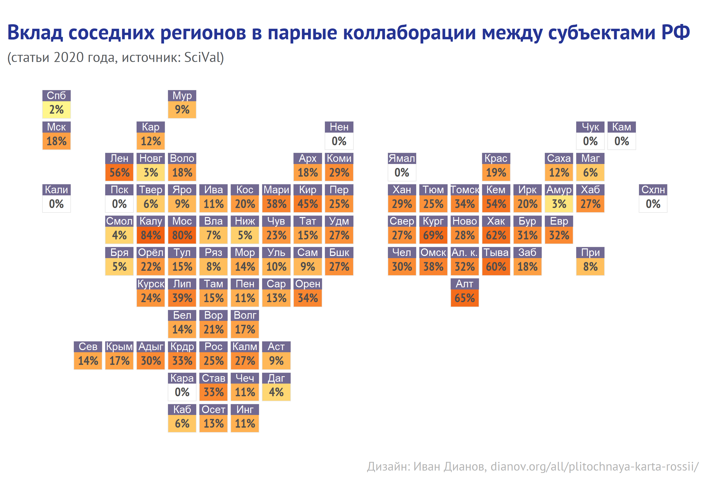

В материале описаны основные подходы к анализу прямого межрегионального научного сотрудничества российских организаций по данным Scopus и SciVal. Для анализа использовались идентификаторы RIRO и открытые данные из Wikidata и GeoNames.
Одна из особенностей российской науки - кардинально неравномерное географическое распределение ученых. Гиперконцентрация в нескольких регионах - Москве, Санкт-Петербурге, Новосибирске - разительно отличает нас от других государств похожего масштаба и научных амбиций, и должна приниматься во внимание при исследовании науки и выстраивании научной политики. RIRO облегчает анализ географического распределения нашей науки, позволяя измерять научные результаты регионов и выявлять паттерны коллаборации, ориентированные как на Москву, так и на соседние регионы. В материале ниже в деталях описывается тактика и техника работы с такой информацией для ряда регионов России на базе RIRO и Scopus, выявляющая, в частности, крайне низкий уровень научного сотрудничества между некоторыми соседствующими регионами.
Поиск статей проводился в онлайн-инструментах Elsevier - Scopus и SciVal с использованием идентификаторов и географических названий, взятых из RIRO.
Предположим, что перед нами возникла задача проанализировать научное сотрудничество организаций Пензенской области с организациями из соседних регионов. Таких пять - Саратовская, Тамбовская, Рязанская, Ульяновская области и республика Мордовия.
Самый простой план анализа выглядит так:
скачиваем из RIRO таблицы 1 (базовые сведения), 2 (геоданные) и 6 (идентификаторы организаций в Scopus)
фильтруем идентификаторы научных организаций в Scopus по выбранным регионам (Пензенская область + 5 граничащих регионов)
формируем поисковые запросы для Scopus и получаем списки публикаций.
В одном из прошлых постов мы подробно описали, как скачивать массив RIRO.
riro_scopus <- paste0(onedrive, "/RusOrgReg/final_tables/1.1.1/v.1.1.1_table6_scopus.csv") %>%
read_csv(col_types = cols(.default = col_character()))
riro1 <- paste0(onedrive, "/RusOrgReg/final_tables/1.1.1/v.1.1.1_table1_basic.csv") %>%
read_csv(col_types = cols(.default = col_character()))
riro2 <- paste0(onedrive, "/RusOrgReg/final_tables/1.1.1/v.1.1.1_table2_geo.csv") %>%
read_csv(col_types = cols(.default = col_character()))
Фильтруем таблицы 2 по региону, потом присоединяем базовые сведения (таблица 1) и идентификаторы Scopus (таблицу 6). В данном эксперименте мы также удалим организации, которые в RIRO имеют статус “Ликвидированная организация”, однако этот шаг следует предпринимать с осторожностью, поскольку Scopus сохраняет идентификаторы некоторых организаций, которые в результате реорганизации уже утратили самостоятельность и в настоящий момент существуют лишь в виде структурного подразделения другого юридического лица.
penz <- riro2 %>%
filter(grepl("Пенз", region, ignore.case = TRUE)) %>%
left_join(riro1) %>%
filter(!grepl("Ликвид", status, ignore.case = TRUE)) %>%
left_join(riro_scopus) %>%
select(name_full, inn, level, scopus_id, scopus_affil_name, region, city, geoname_id) %>%
arrange(scopus_id)
penz %>% datatable(rownames = FALSE, extensions = "Buttons",
options = list(columnDefs = list(list(width = '600px', targets = c(0)),
list(width = '250px', targets = c(4)))))
В Пензенской области организаций - 41, профилей Scopus (присутствующих в RIRO) - 5.
Аналогичным образом получим списки организаций для других регионов.
sarat <- riro2 %>% filter(grepl("Сарат", region, ignore.case = TRUE))%>%
left_join(riro1) %>% filter(!grepl("Ликвид", status, ignore.case = TRUE)) %>%
left_join(riro_scopus) %>%
select(name_full, inn, level, scopus_id, scopus_affil_name, region, city, geoname_id) %>%
arrange(desc(scopus_id))
sarat %>% datatable(rownames = FALSE, extensions = "Buttons", options = list(
columnDefs = list(list(width = '600px', targets = c(0)),
list(width = '250px', targets = c(4)))))
В Саратовской области организаций - 85 и профилей Scopus (присутствующих в RIRO) - 24
uljan <- riro2 %>% filter(grepl("Ульян", region, ignore.case = TRUE)) %>%
left_join(riro1) %>% filter(!grepl("Ликвид", status, ignore.case = TRUE)) %>%
left_join(riro_scopus) %>%
select(name_full, inn, level, scopus_id, scopus_affil_name, region, city, geoname_id) %>%
arrange(desc(scopus_id))
uljan %>% datatable(rownames = FALSE, extensions = "Buttons", options = list(
columnDefs = list(list(width = '600px', targets = c(0)),
list(width = '250px', targets = c(4)))))
В Ульяновской области организаций - 37 и профилей Scopus (присутствующих в RIRO) - 10.
tambov <- riro2 %>% filter(grepl("Тамбов", region, ignore.case = TRUE)) %>%
left_join(riro1) %>% filter(!grepl("Ликвид", status, ignore.case = TRUE)) %>%
left_join(riro_scopus) %>%
select(name_full, inn, level, scopus_id, scopus_affil_name, region, city, geoname_id) %>%
arrange(desc(scopus_id))
tambov %>% datatable(rownames = FALSE, extensions = "Buttons", options = list(
columnDefs = list(list(width = '600px', targets = c(0)),
list(width = '250px', targets = c(4)))))
В Тамбовской области организаций - 43 и профилей Scopus (присутствующих в RIRO) - 10.
ryazan <- riro2 %>% filter(grepl("Рязан", region, ignore.case = TRUE)) %>%
left_join(riro1) %>% filter(!grepl("Ликвид", status, ignore.case = TRUE)) %>%
left_join(riro_scopus) %>%
select(name_full, inn, level, scopus_id, scopus_affil_name, region, city, geoname_id) %>%
arrange(desc(scopus_id))
ryazan %>% datatable(rownames = FALSE, extensions = "Buttons", options = list(
columnDefs = list(list(width = '600px', targets = c(0)),
list(width = '250px', targets = c(4)))))
В Рязанской области организаций 46 и профилей Scopus (присутствующих в RIRO) - 12.
mordov <- riro2 %>% filter(grepl("Мордов", region, ignore.case = TRUE)) %>%
left_join(riro1) %>% filter(!grepl("Ликвид", status, ignore.case = TRUE)) %>%
left_join(riro_scopus) %>%
select(name_full, inn, level, scopus_id, scopus_affil_name, region, city, geoname_id) %>%
arrange(desc(scopus_id))
mordov %>% datatable(rownames = FALSE, extensions = "Buttons", options = list(
columnDefs = list(list(width = '600px', targets = c(0)),
list(width = '250px', targets = c(4)))))
В Республике Мордовия организаций 36 и профилей Scopus (присутствующих в RIRO) - 5.
На этом этапе исследователю предстоит определиться со стратегией поискового запроса - использовать для поискового запроса идентификаторы организаций или географические названия. В таблицах выше присутствует столбец geoname_id (из таблицы 2 RIRO), используя значения из которого можно получить англоязычные названия населенных пунктов (сайт http://www.geonames.org предлагает бесплатный API, для языков программирования есть готовые пакеты, но можно и просто зарегистрироваться на сайте, в настройках аккаунта активировать веб-сервисы и отправлять запросы вида http://api.geonames.org/getJSON?formatted=true&geonameId=6295630&username=здесь-ваш-user-name&style=full).
Оба подхода не лишены недостатков.
Используя идентификаторы Scopus, присутствующие в RIRO, мы выпустим из вида небольшие организации, у которых нет полноценного профиля в Scopus, а статьи (чаще всего) разбросаны между так называемыми минорными профилями (из которые лишь немногие присутствуют в RIRO).
Можно ли добавить в RIRO больше “минорных” профилей из Scopus? Задача совсем не сложная, если ориентироваться на те названия, под которыми профили отражаются в Scopus, но под ними могут скрываться статьи из разных организаций (которые алгоритмы Scopus сочли похожими). Никто их не проверял - по этой причине и Elsevier разъясняет, что есть профили полноценные (с номером идентификатора, начинающимся с цифры 6), и есть все “остальные” (которые начинаются с 1).
Используя географические названия, мы рискуем наткнуться на населенные пункты с названиями, которые присутствуют и в других регионах, поэтому придется делать дополнительные фильтры по названию региона или вообще по названиям организаций, что, в свою очередь, исключит статьи, в которых название региона не было явным образом упомянуто.
Попробуем оба варианта.
Формируем поисковые запросы с использованием идентификаторов организаций.
# функция для поискового запроса по идентификаторам организаций через (..ИЛИ..)
region_query <- function(region){
region %>% .$scopus_id %>% na.omit() %>%
paste0("AF-ID(",.,")" ) %>% paste0(., collapse = " OR ")
}
# функция для комбинированного запроса по организациям 2 регионов (..ИЛИ..) И (..ИЛИ..)
region_region_query <- function(region1, region2){
paste0('(', region_query(region1), ') AND (',region_query(region2),')')
}
# поисковой запрос для поиска статей, в которых сотрудничали организации из разных регионов
penz_uljan <- region_region_query(penz, uljan)
penz_tambov <- region_region_query(penz, tambov)
penz_ryazan <- region_region_query(penz, ryazan)
penz_sarat <- region_region_query(penz, sarat)
penz_mordov <- region_region_query(penz, mordov)
cat(paste0("penz_uljan: ", penz_uljan),
paste0("penz_tambov: ", penz_tambov),
paste0("penz_ryazan: ", penz_ryazan),
paste0("penz_mordov: ", penz_mordov),
paste0("penz_sarat: ", penz_sarat),
sep = "\n\n")
penz_uljan: (AF-ID(60028353) OR AF-ID(60070988) OR AF-ID(60075345) OR AF-ID(60075952) OR AF-ID(60104618)) AND (AF-ID(60107946) OR AF-ID(60107818) OR AF-ID(60106357) OR AF-ID(60095514) OR AF-ID(60069249) OR AF-ID(60018834) OR AF-ID(123725173) OR AF-ID(123141752) OR AF-ID(122193050) OR AF-ID(120897197))
penz_tambov: (AF-ID(60028353) OR AF-ID(60070988) OR AF-ID(60075345) OR AF-ID(60075952) OR AF-ID(60104618)) AND (AF-ID(60110133) OR AF-ID(60110112) OR AF-ID(60097367) OR AF-ID(60069626) OR AF-ID(60016405) OR AF-ID(123790134) OR AF-ID(122686317) OR AF-ID(122232965) OR AF-ID(120005603) OR AF-ID(112831438))
penz_ryazan: (AF-ID(60028353) OR AF-ID(60070988) OR AF-ID(60075345) OR AF-ID(60075952) OR AF-ID(60104618)) AND (AF-ID(60110561) OR AF-ID(60110171) OR AF-ID(60095553) OR AF-ID(60019368) OR AF-ID(60006801) OR AF-ID(123612097) OR AF-ID(123242234) OR AF-ID(122957671) OR AF-ID(121618887) OR AF-ID(120785580) OR AF-ID(118489473) OR AF-ID(115393104))
penz_mordov: (AF-ID(60028353) OR AF-ID(60070988) OR AF-ID(60075345) OR AF-ID(60075952) OR AF-ID(60104618)) AND (AF-ID(60121903) OR AF-ID(60110230) OR AF-ID(60023713) OR AF-ID(60005296) OR AF-ID(114477379))
penz_sarat: (AF-ID(60028353) OR AF-ID(60070988) OR AF-ID(60075345) OR AF-ID(60075952) OR AF-ID(60104618)) AND (AF-ID(60115138) OR AF-ID(60110210) OR AF-ID(60110187) OR AF-ID(60109768) OR AF-ID(60108736) OR AF-ID(60107888) OR AF-ID(60104831) OR AF-ID(60096227) OR AF-ID(60075333) OR AF-ID(60068671) OR AF-ID(60027990) OR AF-ID(60022695) OR AF-ID(60013984) OR AF-ID(123807478) OR AF-ID(123740193) OR AF-ID(123712646) OR AF-ID(122755632) OR AF-ID(122548391) OR AF-ID(122451244) OR AF-ID(122017341) OR AF-ID(122017260) OR AF-ID(121418762) OR AF-ID(117560057) OR AF-ID(100437327))Полученные запросы копируем и вставляем в поле для поиска во вкладке Advanced Search веб-интерфейса Scopus. Альтернатива работе руками - использование API. Если Вы знаете, что с делать API, у Вас есть доступ к Scopus и зарегистрирован аккаунт в Elsevier, Вы можете получить себе личный API-ключ https://dev.elsevier.com/scopus.html.
Мы воспользуемся Scopus Search API и получим количество статей, в которых присутствуют (известные RIRO) идентификаторы организаций из соответствующих пар регионов.
# функция для отправки запроса в Scopus и получения total results
scopus_query <- function(query){
GET(paste0("https://api.elsevier.com/content/search/scopus?start=0&query=",
URLencode(query), "&apiKey=",els_api_key)) %>% content() %>%
.[["search-results"]] %>% .[["opensearch:totalResults"]]
}
penz_mordov_data <- scopus_query(penz_mordov)
penz_mordov_data %>% write_rds(paste0(dir, "penz_mordov.rds"))
penz_tambov_data <- scopus_query(penz_tambov)
penz_tambov_data %>% write_rds(paste0(dir, "penz_tambov.rds"))
penz_sarat_data <- scopus_query(penz_sarat)
penz_sarat_data %>% write_rds(paste0(dir, "penz_sarat.rds"))
penz_uljan_data <- scopus_query(penz_uljan)
penz_uljan_data %>% write_rds(paste0(dir, "penz_uljan.rds"))
penz_ryazan_data <- scopus_query(penz_ryazan)
penz_ryazan_data %>% write_rds(paste0(dir, "penz_ryazan.rds"))
Осторожно, результат может шокировать!
Да, количество статей в Scopus, в которых присутствуют профили научных организаций из Пензенской области и одного из соседних регионов, таково:
с организациями Саратовской области - 26
с организациями Тамбовской области - 14
с организациями Ульяновской области - 4
с организациями Рязанской области - 1
с организациями республики Мордовы - 48
И это за все годы. Впечатляет, не правда ли? Более детальный разбор феномена оставим социологам науки.
Хотя может быть просто дело в профилях? Может быть в Scopus есть много статей, которые удовлетворяют поисковому запросу, но прикреплены не к тем профилям?
Попробуем сделать поиск по названиям городов.
Воспользуемся сервисом Geonames, чтобы получить англоязычные названия городов в Пензенской области, в которых (по данным RIRO) есть научные организации.
# функция для получения англоязычного названия населенного пункта
# переменная - geoname_id, а geonames
get_geoname <- function(geoname_id){
xx <- GET(paste0("http://api.geonames.org/getJSON?geonameId=",geoname_id,
"&username=", geonames_credentials,"&style=full")) %>% content()
pluck(xx, "name")
}
penz_names <- penz %>%
select(city, geoname_id) %>% unique() %>% filter(!is.na(geoname_id)) %>%
mutate(eng_geoname = sapply(geoname_id, function(x) get_geoname(x)))
penz_names %>% .[["eng_geoname"]] %>% unique() %>%
paste0("AFFILCITY(",.,")" ) %>% paste0(., collapse = " OR ")
[1] "AFFILCITY(Penza) OR AFFILCITY(Penza Oblast) OR AFFILCITY(Serdobsk) OR AFFILCITY(Kuznetsk) OR AFFILCITY(Zarechnyy)"Поисковой запрос сформирован, но среди названий населенных пунктов присутствует Кузнецк и несложно убедиться, что такой запрос принесет лишние результаты, поскольку в Scopus часть статей, связанных с Новокузнецком, по какой-то причине имеют в аффилиации город “Кузнецк” (пример такой статьи). Кстати, поскольку Elsevier углубляет архивы Scopus, то Новокузнецк можно и под названием Сталинск найти (статья 1961 года с какими-то, судя по аннотации, совершенно бесчеловечными экспериментами над котами). Итак, при поиске по названиям населенных пунктов для исключения старых названий придется в поисковой запрос добавлять PUBYEAR, а для исключения одноименных населенных пунктов из других регионов (где вдруг тоже есть наука) - использовать дополнительную фильтрацию по названию региона. Объем работы увеличивается в разы, поэтому мы всё этого делать не будем, а выполним упрощенные поисковые запросы, используя только название области.
penza_ulyanovsk <- scopus_query("AFFIL(Penza) AND AFFIL(Ul?anovsk)")
penza_ulyanovsk %>% write_rds(paste0(dir,"penza_ulyanovsk.rds"))
penza_saratov <- scopus_query("AFFIL(Penza) AND AFFIL(Saratov)")
penza_saratov %>% write_rds(paste0(dir,"penza_sarat.rds"))
penza_ryazan <- scopus_query("AFFIL(Penza) AND AFFIL(Ryazan)")
penza_ryazan %>% write_rds(paste0(dir,"penza_ryazan.rds"))
penza_mordov <- scopus_query("AFFIL(Penza) AND AFFIL(Mordov* OR Saransk)")
penza_mordov %>% write_rds(paste0(dir,"penza_mordov.rds"))
penza_tambov <- scopus_query("AFFIL(Penza) AND AFFIL(Tambov)")
penza_tambov %>% write_rds(paste0(dir,"penza_tambov.rds"))
Итого, у организаций Пензенской области совместных статей с организациями:
Саратовской области - при поиске по идентификаторам найдено 26, при поиске по названию региона - 47.
Тамбовской области - при поиске по идентификаторам найдено 14, при поиске по названию региона - 18.
Ульяновской области - при поиске по идентификаторам найдено 4, при поиске по названию региона - 7.
Рязанской области - при поиске по идентификаторам найдено 1, при поиске по названию региона - 8.
республики Мордовии - при поиске по идентификаторам найдено 48, при поиске по названию региона - 60.
Одним словом, идентификаторы - хорошо, но “старый добрый поиск” по названиям при достаточном терпении всё ещё приносит лучшие результаты. И вывод следующий (без претензии на новизну) - для задач, где требуется точность, использовать идентификаторы пока не стоит.
SciVal (также как и InCites компании Clarivate) предлагает инструменты для анализа научного сотрудничества. InCites предлагает делить статьи на Domestic и International - два основных типа сотрудничества, для которых разница в уровне публикаций во многих областях науки, к сожалению, достаточно выразительна. SciVal же выделяет 4 группы - Single Author, Institutional, National и International, что тоже интересно, поскольку позволяет легко отделить статьи, подготовленные в сотрудничестве с другими отечественными организациями, от работ, написанных в домашних стенах. Помимо готовой типологии и модуля Collaborations, SciVal предлагает также возможность экспорта данных, в которых есть идентификаторы организаций. И хотя предыдущий пример нас убедил в том, что идентификаторы - для лентяев, а лучше терпеливо перебирать названия, существуют задачи, когда терпения может оказаться недостаточно. Например, если мы захотим взглянуть на попарное сотрудничество всех регионов (то есть для n регионов сформировать запросы с корректными географическими названиями и выполнить n*(n-1)/2 поисковых запросов). А если ещё захочется посмотреть не на любое, а только на “прямое” сотрудничество двух регионов, без участия “столиц” или третьих регионов? Такая задача не выглядит совсем уж надуманной, если вспомнить, как часто руководители регионов стали интересоваться показателями научной деятельности.
Попробуем её решить с помощью данных из SciVal (полученных в рамках тестового доступа, любезно предоставленного Elsevier).
Из SciVal выгрузили статьи 2020 года (дата выгрузки - с 01-11.08.2021), в которых присутствуют только авторы из России (97 848 статей).
Важно подчеркнуть, что тип коллаборации в SciVal определяется на основании профилей в SciVal, а не профилей в Scopus. Первых заметно меньше, поэтому для статьи с таким набором аффилиаций:
Irkutsk Interregional Veterinary Laboratory, 4, Botkin st., Irkutsk, 664005, Russia
Irkutsk State Agrarian University named after A. A. Ezhevsky, 59, Timiryazev st., Irkutsk, 664007, Russia
Secondary school no. 15, st. Lenina, 56, Irkutsk, 664003, Russia
в данных SciVal в столбце Number of Institutions стоит прочерк, а сама статья выгружается вместе со статьями типа Institutional Collaboration. Но есть столбец, в котором присутствуют идентификаторы организаций (118921589, 117886267, 125138715) и по нему мы видим, что это не Institutional Collaboration. Мы воспользуемся данными из этого столбца с профилями Scopus, чтобы переопределить типы сотрудничества.
На данном этапе мы получили 51 711 статей с участием российских авторов, в которых присутствует более 1 идентификатора, что соответствует 42% от общего количества статей с участием российских авторов (кстати, это побольше, чем доля статей с National Collaboration, которую показывает встроенная функция SciVal).
Теперь отберем статьи, в которых сотрудничают организации из 2 регионов (не из 1, не из 3, а именно из 2).
В итоге мы получили 31 218 статей, в которых (по данным SciVal) присутствуют идентификаторы организаций из 2-х регионов - это примерно четверть от общего количества статей с участием российских авторов.
Рассчитать количество совместных статей между регионами просто, если вспомнить линейную алгебру - необходимо создать матрицу (регионы - статьи) и умножить её на себя же транспонированную - в итоге получим матрицу (регион - регион). Из этой матрицы мы получим “комфортную” таблицу, в которой для каждого региона указано количество статей 2020 года, написанных в придуманном нами “двойном межрегиональном” сотрудничестве, перечислены основные регионы-партнеры, общее количество статей, подготовленных с ними и доля каждого партнера.
sv2020m <- read_csv(paste0(svdir, "sv_2020m_rus.csv"),
col_types = cols(.default = col_character(), fwci = col_double()))
a <- sv2020m[,3:4] %>% mutate(n = 1) %>% distinct() %>%
pivot_wider(names_from = eid, values_from = n, values_fill = 0) %>%
tibble::column_to_rownames("region") %>% as.matrix()
collab <- a %*% t(a)
remove(a)
collab_df <- collab %>% as.data.frame() %>%
tibble::rownames_to_column("region") %>%
pivot_longer(cols = -1, names_to = "partner", values_to = "n_pubs") %>%
filter(region!=partner) %>%
filter(n_pubs>0) %>%
mutate_at(c("region", "partner"),
~ifelse(grepl("Якутия",.x), "Республика Саха (Якутия)",.x)) %>%
group_by(region) %>% mutate(total_pubs = sum(n_pubs)) %>% ungroup() %>%
mutate(share = round(n_pubs/total_pubs, 4)) %>%
arrange(region, desc(n_pubs)) %>% relocate(region, total_pubs)
collab_df %>%
mutate_at(c("region", "partner"), ~as.factor(.x)) %>%
datatable(rownames = FALSE, filter = "top", extensions = "Buttons",
options = list(dom = "Brtip", autoWidth = FALSE, scrollX = FALSE,
columnDefs = list(list(width = '300px', targets = c(0,2))))) %>% formatPercentage("share", digits = 1)
Выбирая в столбце region определенный регион (выпадающее меню), можно получить рейтинг сотрудничающих регионов (напомним, речь о прямом сотрудничестве, без участия других регионов, в публикациях 2020 года, полученных из SciVal). Для многих регионов сотрудничество с организациями из Москвы или Санкт-Петербурга гораздо более интенсивно, чем организациями из соседних регионов.
Попробуем это визуализировать, отразив для каждого региона долю двойного сотрудничества со столичными городами (Москва, Санкт-Петербург), соседними регионами и всеми остальными регионами.
Но прежде нам необходимо получить список соседствующих регионов. Воспользуемся для этой цели информацией из Wikidata, выполнив следующий SPARQL-запрос с помощью пакета WikidataQueryServiceR.
region_neis <- WikidataQueryServiceR::query_wikidata('SELECT ?regionLabel ?region2Label
WHERE {
VALUES ?type {wd:Q184122 wd:Q43263}.
?region wdt:P31/wdt:P279 ?type.
?region wdt:P17 wd:Q159.
?region wdt:P47 ?region2.
?region2 wdt:P31/wdt:P279 ?type.
SERVICE wikibase:label { bd:serviceParam wikibase:language "ru". }
}')
region_neis %>% arrange(regionLabel, region2Label) %>% rename(`Регион` = 1, `Регион-сосед` = 2) %>%
datatable(rownames = FALSE, filter = "top", extensions = "Buttons",
options = list(dom = "Brtip", autoWidth = FALSE, scrollX = FALSE,
columnDefs = list(list(width = '300px', targets = c(0,1)))))
Теперь введение интересующих нас категорий (столицы, соседи, все остальные) не составит труда.
# вспомогательная таблица, которая связывает различные варианты названий регионов
regmatcher <- readxl::read_xlsx(paste0(onedrive, "/SPb/region_matcher.xlsx"))
region_neis <- region_neis %>%
unite(col = "collab_tag", c("regionLabel", "region2Label"), sep = "_", remove = FALSE)
collab_df <- collab_df %>%
left_join(regmatcher %>% select(region = collab_names, regionLabel = wiki)) %>%
left_join(regmatcher %>% select(partner = collab_names, region2Label = wiki)) %>%
unite("collab_tag", c("regionLabel", "region2Label"), sep = "_") %>%
mutate(category = case_when(
collab_tag %in% region_neis$collab_tag ~ "соседи",
grepl("Москва|Санкт", partner) ~ "столицы",
TRUE ~ "остальные")
) %>%
select(-collab_tag)
collab_cat <- collab_df %>%
group_by(region, category) %>%
summarize(share = sum(share, na.rm = TRUE)) %>%
ungroup() %>%
left_join(regmatcher %>% select(region = collab_names, map)) %>%
select(name = map, category, share)
collab_cat %>%
rename(`Регион` = 1, `Категория` = 2, `Сумм.доля, %` = 3) %>%
datatable(rownames = FALSE, filter = "top", extensions = "Buttons",
options = list(dom = "Brtip", autoWidth = FALSE, scrollX = FALSE,
columnDefs = list(list(width = '300px', targets = c(0,1))))) %>%
formatPercentage("Сумм.доля, %", digits = 1)
На плиточной карте ниже (дизайн - И.Дианов) цветом показан суммарный вклад соседних регионов в двойное сотрудничество между субъектами Российской Федерации.
mygrid <-read_csv(paste0(onedrive, "/SPb/Russia_grid_tile2.csv")) %>%
mutate(name=str_trim(name))
library(extrafont)
library(ggplot2)
library(scales)
gg <- expand.grid(category = unique(collab_cat$category),
name = unique(mygrid$name)) %>%
left_join(collab_cat) %>%
filter(category=="соседи") %>%
mutate(share = replace_na(share, 0)) %>%
left_join(mygrid) %>%
ggplot()+
geom_rect(aes(xmin=col-0.45, xmax=col+0.45, ymin=row-0.45, ymax=row+0.45,
fill=log2(share)+1), colour="grey90", size=0.2) +
geom_rect(aes(xmin=col-0.45, xmax=col+0.45, ymin=row-0.1, ymax=row-0.45),
fill="#716991") +
geom_text(aes(x=col, y=row-0.3, label=code), size=2.5, color="white")+
geom_text(aes(x=col, y=row+0.15, label=percent(share,1)),
size=3, fontface="bold", color="grey30", family = "PT Sans Narrow")+
scale_y_reverse()+
scale_fill_gradient(low="#FFF68C", high="#F26111",na.value = "white")+
labs(x="", y="",
caption="Дизайн: Иван Дианов, dianov.org/all/plitochnaya-karta-rossii/",
title="Вклад соседних регионов в парные коллаборации между субъектами РФ",
subtitle = "(статьи 2020 года, источник: SciVal)")+
coord_equal()+ theme_minimal() +
guides(fill="none")+
theme_classic()+
theme(text=element_text(family="PT Sans", color = "#53565A", size = 12),
plot.title.position = "plot",
plot.caption.position = "plot",
plot.caption = element_text(size = rel(0.7), hjust =1, color="grey70", face="plain"),
plot.subtitle = element_text(hjust=0, size = rel(0.8), family="PT Sans"),
plot.title = element_text(size=rel(1.2), family="PT Sans", face="bold",
color = "#253494"),
plot.margin = margin(5, 5, 5, 5),
axis.text = element_blank(),axis.ticks = element_blank(),
axis.title = element_blank(),panel.grid = element_blank(),
axis.line = element_blank())
ggsave(plot = gg, filename=paste0(img.dir, "/map_region.png"),
width=17, height = 12, units="cm", dpi=400)
filename <- paste0(img.dir, "map_region.png")
knitr::include_graphics(filename)

Поясним на примере Брянской области. В публикациях 2020 года, которые присутствуют в SciVal и где организации Брянской области соседствуют в строках аффилиации с организациями из любого другого субъекта РФ (но только одного!), соседние регионы (например, Калужская или Смоленская области) присутствуют лишь в 5% случаев. Примечательно, что сотрудничество между соседними субъектами за Уралом как правило выше, чем в Европейской части. Исследователями из Брянска до Калуги ехать может быть ближе, но и до Москвы недалеко, а возможностей для научного сотрудничества в столице гораздо больше.
На визуализации ниже показана сеть сотрудничества, в которой можно увидеть связи между регионами, выделив любой из них кликом на вершину графа или с помощью выпадающего окна. При наведении на вершину отображается количество статей 2020 года, в которых учреждения выбранного региона соседствуют с учреждениями других регионов (по данным SciVal) - эта же величина определяет размер вершины.
g1 <- graph_from_adjacency_matrix(collab, mode = "upper", weighted = TRUE) %>%
simplify() %>%
as_tbl_graph() %>%
activate(nodes) %>%
mutate(d = degree(.)) %>% filter(d>1) %>%
left_join(collab_df %>% select(name = region, total_pubs) %>% distinct())
nodes <- data.frame(id = 1:vcount(g1), label = V(g1)$name,
value = V(g1)$total_pubs,
title = paste0(V(g1)$name, ":", V(g1)$total_pubs))
edges <- get.edgelist(g1, names = FALSE) %>% as.data.frame() %>% rename(from = V1, to = V2)
edges$width <- scales::rescale(E(g1)$weight, to = c(1,5))
visNetwork(nodes, edges, height = "600px", width = "100%",
main = "Прямые научные коллаборации регионов России (2020)",
submain = "<br/> ") %>%
visOptions(highlightNearest = list(enabled = T, degree = 1, hover = F),
nodesIdSelection = list(enabled = TRUE,
style = 'width: 250px; height: 25px; background: #f8f8f8; color: darkblue; border:none; outline:none;')) %>%
visLayout(randomSeed = 123) %>%
visPhysics(solver = "barnesHut", minVelocity = 2,
barnesHut = list(gravitationalConstant = -20000)) %>%
visEdges(smooth = FALSE, color = "#d0d0d0")
Картина выглядит предсказуемо - в центре находятся г. Москва и г. Санкт-Петербург, которые связаны почти со всем другими регионами, что создаем плотную сеть связей и маскирует структуру менее массивных участников. Для наглядности для следующей визуализации сделаем несколько упрощений: во-первых, удалим из графа Москву и Санкт-Петербург; во-вторых, удалим все связи, в которых менее 5 статей в 2020 году; в-третьих, удалим все регионы, которые в результате вышеперечисленных упрощений остались без связей. Для получившейся сети выполним кластеризацию (Louvain) и раскрасим вершины по кластерам (общий цвет будет означать близость вершин).
g2 <- graph_from_adjacency_matrix(collab, mode = "upper", weighted = TRUE) %>%
simplify() %>%
as_tbl_graph() %>%
activate(edges) %>% filter(weight>=5) %>%
activate(nodes) %>%
filter(!name %in% c("Москва", "Санкт-Петербург")) %>%
mutate(d = degree(.)) %>% filter(d>1) %>%
left_join(collab_df %>% select(name = region, total_pubs) %>% distinct()) %>%
mutate(cluster = group_louvain())
nodes <- data.frame(id = 1:vcount(g2), label = V(g2)$name,
group = V(g2)$cluster, value = V(g2)$total_pubs,
title = paste0(V(g2)$name, ":", V(g2)$total_pubs))
edges <- get.edgelist(g2, names = FALSE) %>% as.data.frame() %>% rename(from = V1, to = V2)
edges$width <- scales::rescale(E(g2)$weight, to = c(1,5))
visNetwork(nodes, edges, height = "600px", width = "100%",
main = "Прямые научные коллаборации регионов России* (2020)",
submain = "* - без гг.Москва и Санкт-Петербург и без связей, в которых <5 статей") %>%
visOptions(highlightNearest = list(enabled = T, degree = 1, hover = F),
nodesIdSelection = list(enabled = TRUE,
style = 'width: 250px; height: 25px; background: #f8f8f8; color: darkblue; border:none; outline:none;')) %>%
visLayout(randomSeed = 123) %>%
visPhysics(solver = "barnesHut", minVelocity = 2,
barnesHut = list(gravitationalConstant = -15000)) %>%
visEdges(smooth = FALSE)
Данный материал преследовал исключительно демонстративные цели -
показать возможности использования датасета RIRO для решения прикладных задач,
продемонстрировать ограничения, связанные с видами поиска и полнотой информации в профилях организаций.
В дополнение к тексту статья содержит фрагменты кода (R), который может оказаться полезным другим исследователям.
Использованные выше подходы не исключали исследователей, которые могли в строке аффилиации указать несколько организаций из разных регионов. В данных Scopus связь между авторами и аффилиациями сохранена в одном из столбцов, что позволяет идентифицировать такие случаи и при необходимости исключить их из выборки. В данных SciVal авторы и аффилиации приведены в отдельных столбцах, поэтому идентифицировать можно только ту часть статей, где для единственного автора указано несколько организаций из разных регионов. Подобные статьи немногочисленны и их исключение не приведет к существенному изменению наблюдаемой картины.
Allaire J, Xie Y, McPherson J, Luraschi J, Ushey K, Atkins A, Wickham H, Cheng J, Chang W, Iannone R (2021). rmarkdown: Dynamic Documents for R. R package version 2.7, <URL: https://github.com/rstudio/rmarkdown>.
Almende B.V., Thieurmel B, Robert T (2019). visNetwork: Network Visualization using ‘vis.js’ Library. R package version 2.0.9, <URL: https://CRAN.R-project.org/package=visNetwork>.
Csardi G, Nepusz T (2006). “The igraph software package for complex network research.” InterJournal, Complex Systems, 1695. <URL: https://igraph.org>.
Henry L, Wickham H (2020). purrr: Functional Programming Tools. R package version 0.3.4, <URL: https://CRAN.R-project.org/package=purrr>.
Pedersen T (2020). tidygraph: A Tidy API for Graph Manipulation. R package version 1.2.0, <URL: https://CRAN.R-project.org/package=tidygraph>.
Popov M (2020). WikidataQueryServiceR: API Client Library for ‘Wikidata Query Service’. R package version 1.0.0, <URL: https://CRAN.R-project.org/package=WikidataQueryServiceR>.
Wickham H (2020). tidyr: Tidy Messy Data. R package version 1.1.2, <URL: https://CRAN.R-project.org/package=tidyr>.
Wickham H (2016). ggplot2: Elegant Graphics for Data Analysis. Springer-Verlag New York. ISBN 978-3-319-24277-4, <URL: https://ggplot2.tidyverse.org>.
Wickham H (2019). stringr: Simple, Consistent Wrappers for Common String Operations. R package version 1.4.0, <URL: https://CRAN.R-project.org/package=stringr>.
Wickham H (2020). httr: Tools for Working with URLs and HTTP. R package version 1.4.2, <URL: https://CRAN.R-project.org/package=httr>.
Wickham H, Francois R, Henry L, Muller K (2021). dplyr: A Grammar of Data Manipulation. R package version 1.0.3, <URL: https://CRAN.R-project.org/package=dplyr>.
Wickham H, Hester J (2020). readr: Read Rectangular Text Data. R package version 1.4.0, <URL: https://CRAN.R-project.org/package=readr>.
Xie Y (2020). knitr: A General-Purpose Package for Dynamic Report Generation in R. R package version 1.30, <URL: https://yihui.org/knitr/>.
Xie Y (2015). Dynamic Documents with R and knitr, 2nd edition. Chapman and Hall/CRC, Boca Raton, Florida. ISBN 978-1498716963, <URL: https://yihui.org/knitr/>.
Xie Y (2014). “knitr: A Comprehensive Tool for Reproducible Research in R.” In Stodden V, Leisch F, Peng RD (eds.), Implementing Reproducible Computational Research. Chapman and Hall/CRC. ISBN 978-1466561595, <URL: http://www.crcpress.com/product/isbn/9781466561595>.
Xie Y, Allaire J, Grolemund G (2018). R Markdown: The Definitive Guide. Chapman and Hall/CRC, Boca Raton, Florida. ISBN 9781138359338, <URL: https://bookdown.org/yihui/rmarkdown>.
Xie Y, Cheng J, Tan X (2021). DT: A Wrapper of the JavaScript Library ‘DataTables’. R package version 0.17, <URL: https://CRAN.R-project.org/package=DT>.
Xie Y, Dervieux C, Riederer E (2020). R Markdown Cookbook. Chapman and Hall/CRC, Boca Raton, Florida. ISBN 9780367563837, <URL: https://bookdown.org/yihui/rmarkdown-cookbook>.
Text and figures are licensed under Creative Commons Attribution CC BY 4.0. The figures that have been reused from other sources don't fall under this license and can be recognized by a note in their caption: "Figure from ...".